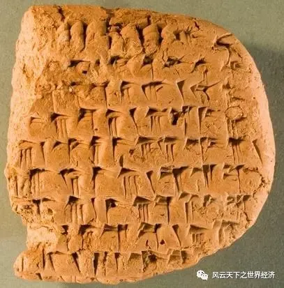
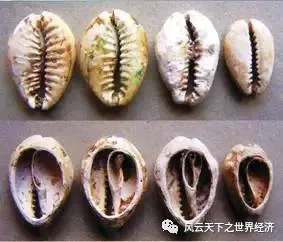
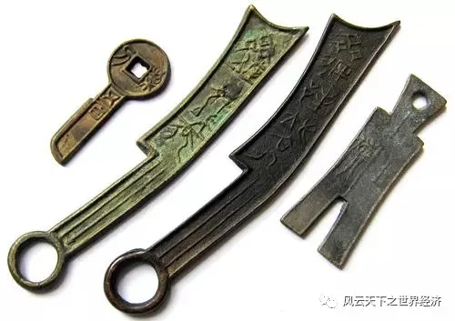
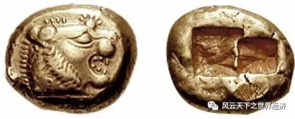
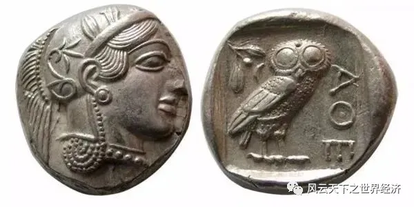
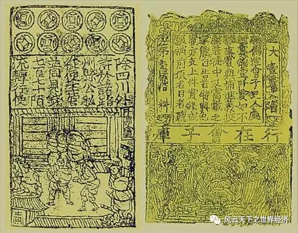
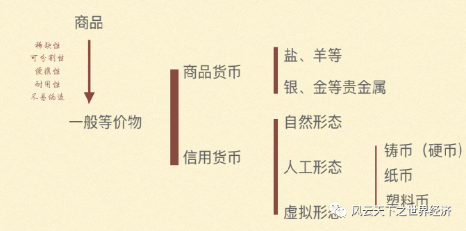
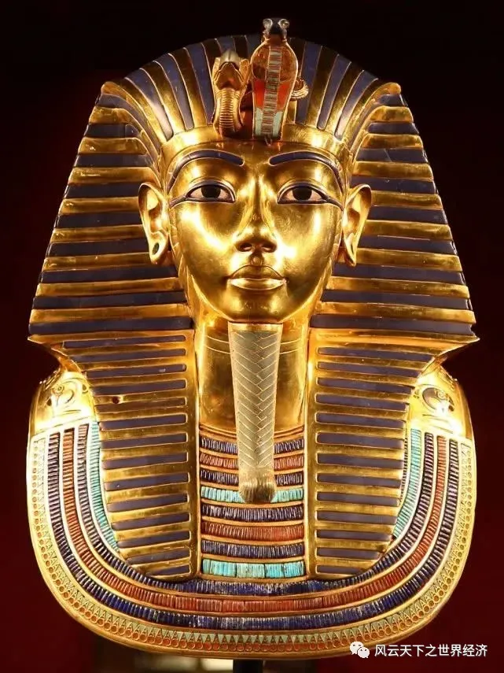

时在太初，万物善美。又过了很多很多年，神说，要有钱，于是就有了货币。从此人类的命运开始转向，金钱如福音，亦如鬼魅；它是一切，也是虚无。
人类有一个古老的习俗，如果不能找到一件事物的始作俑者，那么就会一劳永逸地把它归因于神。天、地、光、空气、日月星辰都曾经或者依然遭逢这样的待遇。而关于是谁创造了货币这样的问题，至少在今天，我们尚未找到答案。因此，也就有了本文开篇的臆断。
那些古老的货币
也不知从何时起，货币如无源之水一般沾湿了每一位先民的衣襟，进而侵占了经济世界的每一个角落。时至今日，它已然成为当代经济最为华美也最不能失去的一件外衣。它让经济的世界闪着刺眼的金色光芒，也填充了百姓的日常，成为生计中最值得信赖的依靠。失去货币，我们生产出来的每一件物品，都几乎不知道该如何清晰简洁地表达。
货币的神奇魔力如暗夜的婴啼，召唤我们去寻找它最初的样子。
并非所有的交换行为都需要货币的参与，比如以物易物。可以想见，在人类漫长的演进史中的很长一段时间里，交换都是以这样的形态进行的。谷物、动物、囚犯、武器、兽皮，这些对早期人类而言有价值的物品，都是以两两组合的方式进行着等价交换，所有的物品都曾经在智人的生活里相遇，并在擦肩而过中并被画上等号。
这样的交易方式随着需求的多样化开始被逐渐厌弃，人们需要一种更为便捷的方式获得自己想要的物品，于是在物物交易中某些商品被使用得越来越多，牛、羊、盐、香烟等都曾经被赋予这样的使命，如今我们统称他们为“一般等价物”。
商品本身的有用性让他们成为一般等价物。但是，如果拿掉这个条件，一件东西是否还可以继续完成这个支付的使命？
经济史告诉我们，这一问题的答案是肯定的。要想做到这一点，关键是要让交易人相信（Trust）这些本身无价值的东西能够真的换来有价值的物品，现代人称之为信用。
信用货币从此进入经济系统。信用货币的产生极大地扩充了货币物理形态的选择范围，范围甚至大到有没有物理形态都无所谓。于是，便有了千奇百怪的货币起源。
在人口稀少的南太平洋小岛上，密克罗尼西亚的雅普人过着悠闲且通货坚硬的生活。该岛的货币系统由6600个硕大的石轮构成，货币供给稳定且不会产生黑市交易。早在1500至2000年之前，自从一个名叫安曼因的雅普勇士从邻近帕卢岛上的石灰岩洞中第一次带回来石头起，雅普人就一直用石头货币。受到月亮的启示，他把石头磨制成大轮盘的样子，从而成就了世界上最大的货币。

雅浦岛上的巨石
在巴比伦王国，伴随着城市的诞生和发展，一个后来被称为“楔形文字”的完整书写系统被发明出来，这些文字将苏美尔语刻印在陶片上，成为最早的文明遗存。当人们开始掌握书写能力时，他们会表达什么？迄今发现最早的一块陶片可以追溯到阿米狄塔那统治时期（公元前1683年至1647年），上面记录了陶片持有人在收获季节应领取的具体粮食数额。尽管陶片的形态有些匪夷所思，但是不妨碍它充当着货币的职能。所以，尼尔·弗格森说，“当人们第一次开始记录他们的活动时，他们想到的不是历史、诗歌或哲学，而是生意”。

作为支付凭证的巴比伦陶片
信用是货币的灵魂，而宗教和礼仪规则有利于建立信任和可靠性。朱诺·莫妮塔(Juno Moneta)是罗马神话里的天后，被称为婚姻和母性之神。朱诺这个名字让她成为最早的六月新娘（June Bride），而莫尼塔这个姓让她成为金钱（Money）一词的滥觞。罗马人在朱诺的神殿里铸造了第一批罗马硬币，也因此获得神的背书。
舍克勒Shekel最早是个重量单位，用来指代一个成年人一把可以抓起的大麦重量（大约11克，即0.39盎司）。后来它逐渐演变成近东的一种古老银质硬币，先在古代提尔城和古迦太基，然后在古代以色列的马加比王朝时期成为货币。
货币的东方故事一点也不比西方来得晚。早在上古时期的黄河流域，人们开始使用一种海生贝壳作为货币，并藉此创造出了灿烂的商业文明。其实，在很久以前贝壳便已远离货币的职能，但是华夏子孙依然用“贝赏贤员贯负贮货财寳買蕒贷资赢赖贾遗婴”这样的文字续写林林总总的财富传奇。

夏商时期的贝币
拟物化也是中国人的创意，战国时期赵国的铲币（布币，形状似铲）、齐国的刀币，以及楚国的蚁鼻币都说明，这些生产工具都曾经作为商品货币在使用，只是为了携带的便利，才有微缩的形态，以方便进入古人的钱袋。虽然不能再当做工具使用，但是作为货币则是形意双全。统一六国后，秦国半两钱成为流通全国的货币形态，其统治地位直到汉代才被汉武帝发行的五铢钱所取代。这些方圆形制的中式货币既反映了古代中国人天圆地方的宇宙观，也赋予其“取道于天”神秘色彩，为这些平淡无奇的铜片提供着源源不断的信用配给。

战国时期各诸侯国流通的货币
当再次回到西方时，货币的形态已经发生了巨大的变化。历史之父希罗多德曾引用公元前六世纪希腊诗人色诺芬尼（不要和另外一个希腊先哲色诺芬混淆）的话，把金银铸币的发明归功于小亚细亚的吕底亚人。公元前600年，吕底亚国王制造了被认为是第一种官方货币的吕底亚货币。硬币是用天然的琥珀金制成的，以不同的动物图案作为面值。这些琥珀金来自首都萨迪斯旁边的巴克图鲁斯河，传说的弗吉尼亚国王迈达斯就是在这条河里洗去了点物成金的法术，让河里的沙子变成了琥珀金。

吕底亚琥珀金
借助货币的神奇魔力，吕底亚王国占领和统治了爱奥尼亚及小亚细亚半岛上几乎所有的希腊殖民城邦。最后一位国王克罗伊斯在位期间，人们铸造了纯金币和纯银币，金银复本位的原始形态在小亚细亚出现。世人对于金银的艳羡留下了“像克洛伊斯一样富有”的俗语，也把吕底亚王国推向了灭亡的边缘。公元前546年，波斯帝国阿契美尼德王朝的缔造者居鲁士大帝摧毁这个富甲一方的国度，克罗伊斯国王被迫吞金而死，成全了他金光闪闪的一生。
吕底亚的金银币很快在整个伯罗奔尼撒地区流传下来，雅典、柯林斯、斯巴达以及众多希腊城邦，都发展出自己城邦的金银币；其中，以雅典的德拉克马银币最为知名。它的正面是智慧女神雅典娜，也是雅典城的守护神；背面的猫头鹰是雅典娜的守护鸟，夜间为雅典娜传递消息。雅典城邦在阿提卡半岛的洛瑞姆的数个银矿为德拉克马的铸造提供了充足的资源，这让他们可以建造三层划桨战船，并在希波战争赢得不可思议的胜利，最终成为提洛同盟的霸主，统领整个爱琴海地区。

希腊德拉克马银币
公元700年左右，一种最早由中国人发明的书写材料——纸，开始成为了货币的载体。纸币时代的过早到来对于西方人来讲简直不可思议，也再次彰显了这个东方国家政权对于经济的绝对主导。作为法定货币的纸片纤薄，但是其背后的信用却足够坚硬。法币信用该如何维系，东西方走向完全不同的道路。直到现在，每一张的美元的背后都印着一行字“我们相信上帝（In God We Trust）”，而最早的纸币交子上则写着“那些伪造的人将被砍头”。

最早的纸币宋代交子
它们何以成为货币？
这些在古代经济中扮演重要角色的货币中，谁是最古老的一个？要想回答这个问题，首先要知道什么是货币，这又要从货币的功能谈起。在绵长的经济历史中，货币形成了最基本的三种功能：支付手段、价值尺度和价值储藏。而“一般等价物”这样的称谓透漏出了货币最初的秘密，它最早被开发的功能便是支付手段。用经济学的语言表达就是——货币作为交换的媒介极大地节约了交易成本。正因如此，商业才能插上飞翔的翅膀，踏上铜臭的祥云，并把这个世界装饰得如此富丽辉煌。
虽然以此标准，我们仍然无法评判最早的商品货币出现在哪里。但是最早的信用货币一定归属于古老东方的贝壳币，它在公元前的第三个千年，也就是夏朝（约前2070~前1600 ））时期便已出现。商周时期，商品经济不断发展，交换各自多余和所需的商品活动日渐频繁，货币的需求量亦随之增大，这时的天然贝类货币已不敷使用，于是在不同的地区，以其他材料制成的仿贝币先后出现，骨贝、玉贝、石贝、木贝都曾经充当货币流通。
尽管在货币的孩提时代，生产工具、牲畜、自然铜、陨石或自然铁、黑曜石、琥珀、珠子都曾被用作各种货币。但是或早或晚，货币的形态开始向金属铸币演化，这无疑是一个自然实验的过程，铸币作为商品货币的成功很大程度上归功于它的便携性、耐用性、可运输性和稀缺性。随着商品交易的发达和使用频度和规模的增加，货币材料的遴选门槛也变得越来越高。最终，货币的使命被赋予了黄金和白银。

货币形态分类
理想中的货币所需要满足的五大属性——稀缺性、可分割性、便携性、耐用性和不易伪造，这些简直是为黄金和白银量身定制的标准。至此你也就会深深地认同马克思的判断：货币天然是金银。
但是，金银天然非货币。500多年前存在于南美的印加帝国已经发展出相当高级社会形态，他们也使用货币进行交易，不过这些货币却是黑曜石、珍珠母贝壳、铁矿石和陶器。尽管印加人脚下埋藏着后来改写世界经济历史的黄金和白银，但他们却是以审美的心态来对待这种让欧洲人趋之若鹜的金属，黄金是“太阳的汗水”，白银是“月亮的眼泪”。直到1532年，出于对黄金和白银的贪婪，一群西班牙人来到这里，覆灭了这个有着3000年历史的文明古国。
无独有偶，埃及曾经是古代最富有的农业社会，法老王坐拥无尽的财富。尼罗河上游的努比亚地区出产古代世界大约90%的黄金，图坦卡蒙王为自己打造的黄金面具历经5000年岁月淘洗依然闪着夺目的光芒，但是黄金的货币职能却迟迟未能被开发。由于埃及不出产银，所以银的价格要远高于黄金。埃及地处北非和阿拉伯半岛结合部，东西南三面被沙漠包围，北面是海洋，独特的地理构造了一个相对封闭的社会，物物交换在这里持续了2000年之后，金属货币才出现。

图坦卡蒙的黄金面具
但是，没有什么可以永享货币的荣光。19世纪中叶，黄金和白银也将逐步告别长袖善舞的经济舞台，被锁进钢筋混凝土铸造的银行金库，任由那些花花绿绿的纸币抒写更宏大的篇章。21世纪的第二个十年，纸币在支付活动中出场的机会越来越少，由比特信息组合而成的虚拟数字货币的大写意时代正式来临。
至于明天的货币将是什么样子，谁又能知晓。
神让基督告诉我们：不要为明天忧虑，因为明天自有明天的忧虑。